Capítulo 2 Transformaciones políticas
Desde el retorno a la democracia, Chile ha experimentado importantes cambios en la esfera política, los que se han manifestado en distintas dimensiones, como la participación electoral (por ejemplo, M. Bargsted et al., 2019), cambios en el respaldo al sistema político, modificaciones en la identificación con partidos políticos (por ejemplo, Bargsted & Maldonado, 2018) o en el comportamiento de protestas en el país (por ejemplo, Somma & Medel, 2017).
En lo que respecta a la participación electoral, Bargsted et al. (2019) muestran que las probabilidades de asistir a la urna son constantemente más bajas para las generaciones más jóvenes, mientras que las generaciones que asistieron a votar al plebiscito de 1988 tienden a participar con mayor regularidad en los procesos eleccionarios subsecuentes. Adicionalmente, los autores también muestran que en la medida que las personas envejecen, sus probabilidades de emitir un voto también aumentan. En la misma línea, en un trabajo previo, Mackenna (2015) reporta que el cambio al sistema de voto voluntario implicó, además de las variaciones etarias, una elitización del electorado tanto educativamente como en términos de sus actitudes políticas. A contar del 2012, aquellos electores más educados, más informados e involucrados políticamente, mostraron mayores niveles de participación, lo que se condice con la elitización educativa del electorado (ver Brady et al., 1995; Mayer, 2011). Es decir, además de las diferencias generacionales entre votantes y no votantes, también se manifiestan variaciones en lo que respecta a los niveles educacionales y/o las actitudes políticas.
Sin embargo, como es de público conocimiento, el voto obligatorio y la inscripción automática adoptada para el plebiscito de salida del 2022, tuvo como consecuencia la reincorporación de personas que se abstuvieron sistemáticamente de votar en elecciones pasadas (desde que se adoptó el sistema de voto voluntario), siendo para no pocos analistas uno de los factores clave que impactaron el resultado obtenido en el plebiscito de salida.
A partir de lo anterior, surge el interés por analizar las diferencias que pueden existir entre aquella fracción de la población que tiende a asistir con regularidad a las urnas y aquella que con frecuencia se resta de los procesos electorales, así como la estabilidad y cambio que todod ellos experimentan en un conjunto de actitudes políticas, tales como la satisfacción con la democracia, la actitud frente al voto, sus preferencias respecto al proceso constituyente, entre otros aspectos que serán analizados en este reporte.
2.1 Participación política
Según cifras oficiales, con el nuevo sistema, la participación electoral pasó de un 55,65% en la segunda vuelta presidencial de 2021 –elección voluntaria con mayor nivel de votación– a un 85,86% en el plebiscito de salida de 2022, la primera elección en la se implementó el voto obligatorio con inscripción automática.
Como se observa en el Gráfico 2.1, en materia de participación electoral, ELSOC tiende a sobreestimar el porcentaje de votantes al igual que ocurre en otras encuestas de opinión pública. Esto tiene diversas explicaciones posibles. Una de ellas es que la pregunta sobre asistencia a sufragar sufre de una alta deseabilidad social, es decir, los individuos responden lo que creen que se considera socialmente aceptado (Holbrook & Krosnick, 2010). En este caso, la idea de cumplir con el deber cívico puede conducir a personas que no votaron a responder que sí lo hicieron para satisfacer las normas sociales. Otra explicación plausible es la auto-selección en encuestas de opinión, las que tienden a ser respondidas por individuos con un alto interés en asuntos públicos, aún con esfuerzos metodológicos e incentivos durante el levantamiento de información. Esto deriva en que quienes responden encuestas puedan efectivamente haber votado en mayor proporción que la población general (Jackman, 1999; Voogt & Saris, 2003). Cualquiera sea el caso, el Gráfico 2.1 muestra un notorio incremento, sobre el 19%, en la participación entre la segunda vuelta presidencial y el plebiscito de salida de 2022, lo que probablemente se deba a la obligatoriedad del voto. No obstante, ELSOC reporta que un 95,3% de la muestra declara haber asistido a votar, mientras que las cifras oficiales indican que votó un 85,9% del electorado.
Figura 2.1: Participación electoral por elección

En resumen, la adopción del voto obligatorio para el plebiscito de salida de 2022 tuvo un efecto significativo en lo que refiere a la reintroducción de sectores que históricamente se abstuvieron de los procesos eleccionarios.
Este informe busca analizar la incorporación de este nuevo grupo de votantes al sistema electoral, así como sus perspectivas, conductas y posibles efectos sobre la democracia y cohesión social. Para esto identificamos perfiles de votantes, incluidos los nuevos votantes que previamente abstenían su sufragio, a través de un Análisis de Clases Latentes (LCA) que emplea como insumo preguntas sobre participación electoral retrospectiva durante las últimas cinco elecciones1, excluyendo al plebiscito de salida de 2022 (y consultadas retrospectivamente en diferentes olas de la encuesta). Esta técnica permite clasificar a los participantes a partir de sus patrones de respuesta, en este caso su comportamiento electoral anterior a la obligatoriedad del voto. De esta forma pudimos identificar tres tipos de votante: (1) Votante Habitual, (2) No Votante y (3) Votante Reactivo.
El Gráfico 2.2 muestra los tres tipos de votantes identificados y sus respectivos porcentajes de participación para cada elección incorporada al Análisis de Clases Latentes. Los votantes habituales, que representan un 70,3%, tienen elevados niveles de participación en todos los comicios, habiendo participado levemente menos en la elección presidencial de 2017. De acuerdo con la literatura internacional, quienes votan habitualmente son personas que poseen un alto sentido del deber cívico, independientemente de sus preferencias políticas (Blais & Achen, 2019). Por contraste, el no votante representa un 17,3%. Este grupo tiende al abstencionismo, elemento que destaca en la elección presidencial de 2021. Esto podría ser el resultado de una arraigada desafección política, producida por falta de interés, poco sentido del impacto individual sobre los procesos políticos y desconfianza en las instituciones (Torcal & Montero, 2006), características que serán exploradas más adelante en el informe. Los votantes reactivos, por su parte, representan un 12,3%. Estos son un conjunto de individuos que incrementan su participación en eventos políticos significativos, de forma que su participación es irregular. Muestran baja participación para las elecciones municipales y de convencionales de 2021, aunque alcanzan niveles medios en el resto de los procesos. Es posible hipotetizar que su participación está influida por el contexto en que ocurre la elección, así como de la evaluación de costos de asistir a las urnas y percepción de beneficios derivados de la elección (Riker & Ordeshook, 1968).
Figura 2.2: Perfiles de votante
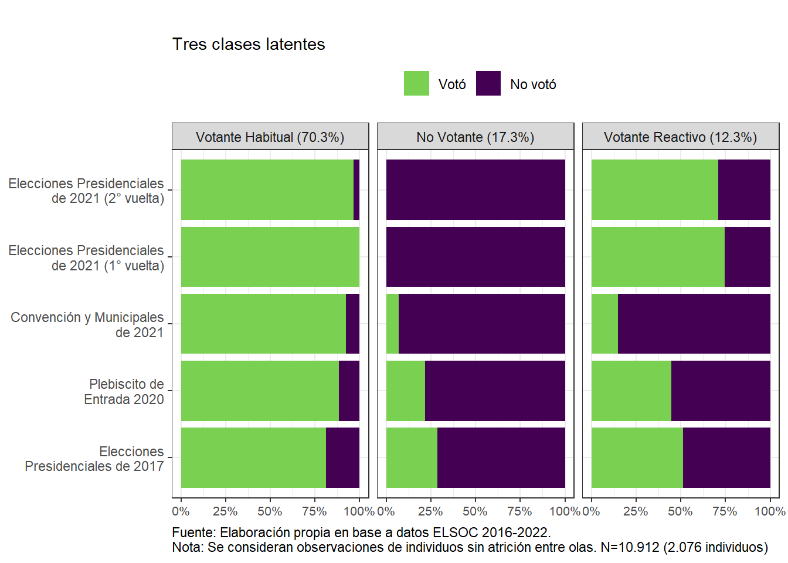El Gráfico 2.3 muestra cómo la gran desigualdad en los niveles de participación entre tipos de votantes se atenúa con la reintroducción del voto obligatorio en 2022. Los votantes habituales superan en menos de tres puntos porcentuales la participación de los votantes reactivos, en contraste al casi 26% que los separaba en la elección anterior. Asimismo, la participación de los no votantes incrementa a un 83,8% respecto a votaciones previas, en las cuales su participación fue muy baja. En suma, la reintroducción de la obligatoriedad del voto tiene un efecto de activación política que amplía la base representativa del sistema político.
Figura 2.3: Porcentaje que declaró haber votado según perfil de votante
El Gráfico 2.4 muestra diferencias importantes en la percepción de autoeficacia política entre los distintos tipos de votantes. Entre los votantes habituales, en los últimos años, cerca de un 90% comparte la creencia de que el voto es un deber cívico, que incide en los resultados de la elección y que es un medio para expresar ideas. Entre los no votantes, por el contrario, estas creencias no superan el 80% de acuerdo, lo que coincide con la noción de que corresponde a ciudadanos más desafectos, en tanto perciben un menor impacto individual sobre el sistema político a través de procesos eleccionarios (Torcal & Montero, 2006). Es relevante notar que en 2021 se produce una reducción en la auto-eficacia política para los tres tipos de votantes y, luego, en 2022 se incrementa, superando incluso los niveles previos a 2019. Esto permite reflexionar sobre los efectos de la obligatoriedad del voto y los posibles efectos que este sistema tiene sobre la subjetividad del deber cívico, o bien la incidencia que pudo haber tenido el proceso constituyente sobre esta materia. Como se ve más arriba (Gráfico 2.1 ), la participación en elecciones se incrementó desde el 2020, en el contexto del proceso constitucional y la subsecuente elección presidencial. La reintroducción del voto obligatorio reforzó esa tendencia.
Figura 2.4: Autoeficacia política según perfil de votante

El Gráfico 2.5 ilustra la participación en protestas para los tres tipos de votantes. Si bien se observa una frecuencia global relativamente baja, generalmente inferior al 10%, el gráfico revela que la participación no-convencional refleja en parte la conducta electoral, algo que coincide con los hallazgos de Aguilera & Espinoza (2022) quienes muestran que, en comparación al resto de la población, aquellos que participaron de las protestas en octubre de 2019 tienden a ser personas con un alto involucramiento político, por medio dela firma de peticiones o de la emisión de opiniones políticas en redes sociales (para un ejemplo internacional, ver McAdam & Tarrow, 2010). Así, los votantes habituales tienden a participar sustancialmente más en marchas o manifestaciones en comparación a los votantes reactivos y no votantes. Más aún, este hallazgo es una imagen de la desigualdad que se observada en los niveles de participación electoral que involucra a dichos dichos grupos. Es importante resaltar la magnitud de la participación en protestas en 2019, año en que se incrementa para los tres tipos de votante, alcanzando un 10,7% de participación (frecuente o muy frecuente) para el grupo políticamente más involucrado. Esto coincide con la cantidad de protestas reportada a nivel nacional en 2019, la cual aumenta dramáticamente respecto de los años anteriores (Garretón et al., 2020). Para todos los grupos, esta tendencia retorna a sus valores normales entre 2021 y 2022, lo que puede deberse al efecto de la pandemia en el truncamiento de las protestas de 2019.
Figura 2.5: Participación en marchas o manifestaciones, según perfil de votante

2.2 Caracterización del tipo de votante
Las diferencias entre los tipos de votantes también se reflejan en sus características sociodemográficas. Es importante constarar que, dado el carácter panel de la encuesta, algunas de estas características sociodemográficas, tales como el sexo del entrevistado, se mantienen constantes en el tiempo. El Gráfico 2.6 muestra que en el grupo de votantes habituales, mujeres y hombres están distribuidos de manera equivalente. En el grupo de no votantes, se observa una proporción levemente mayor de mujeres (54,3%). Finalmente, en el grupo de votantes reactivos las mujeres tienen una presencia aún mayor, llegando a un 60,9%.
Figura 2.6: Sexo según perfil de votante

En materia de edad, el Gráfico 2.7 revela que el grupo de votantes habituales tienen una proporción levemente mayor de adultos-jóvenes, con un 52,2% de personas entre 18 y 49 años, alrededor de un 4% más que los otros tipos de votantes. No obstante, este grupo también es el que tiene mayor presencia de adultos mayores, un 17,6%. Los votantes reactivos por su parte tienen un porcentaje más elevado de jóvenes entre 18 y 29 años (10,9%), aunque si a ello se le suman las personas entre 30 y 49 años el porcentaje es muy similar al de los no votantes, alrededor de un 45,4%. El porcentaje de adultos entre 50 y 64 años y personas mayores también es relativamente similar entre los no votantes y votantes reactivos. En términos generales, los grupos que más difieren entre tipos de votantes son las personas de 30-49 años, que se concentran en mayor proporción en los votantes habituales, y de 50-54 años, que se agrupan más pronunciadamente entre los votantes reactivos.
Figura 2.7: Tramos etarios en 2022 según perfil de votante

En cuanto al nivel educacional de los distintos tipos de votantes, el Gráfico 2.8 muestra marcadas diferencias, consistente con la literatura que identifica al nivel educacional como uno de los factores relevantes para explicar el comportamiento electoral (Smets & van Ham, 2013). El grupo de votantes habituales es el que presenta una mayor proporción de personas con educación terciaria, llegando a un 49,4% (26,8% de personas con educación universitaria y un 22,6% de personas con educación técnica). En contraste, la proporción de personas con educación terciaria llega a un 38,2% en el grupo de votantes reactivos y a solo un 19,9% en el grupo de no votantes. Es interesante destacar que las personas con educación universitaria tienen una proporción similar en los grupos de no votantes y votantes reactivos (alrededor de un 10%), aumentando de manera notoria en el grupo de votantes habituales (26,8%). Por otro lado, las personas con educación técnica se concentran principalmente en el grupo de votantes reactivos (27,5%). Estas diferencias entre educación terciaria técnica y educación universitarias relevan las diferentes formas de relación con política a partir del acceso a la educación terciaria. El resultado indica que son particularmente las personas con educación técnica - en comparación a quienes tienen educación universitaria- quienes se activaron en mayor grado en la última elección presidencial del 2021.
En cuanto a los participantes que tienen educación básica y media, se constatan variaciones importantes según el perfil de votante. La menor proporción está presente en el grupo de votantes habituales, llegando a un 50,5% (12,4% de personas con educación básica y 38,1% de personas con educación media). Luego, en el grupo de votantes reactivos la proporción llega a 61,8% (20,3% de personas con educación básica y 41,5% de personas con educación media), Finalmente, en el grupo de no votantes la proporción llega a 80% (25,3% de personas con educación básica y 54,7% de personas con educación media). Como se observa, tanto el grupo de educación básica como el grupo de educación media, tienen una menor presencia en los votantes habituales, luego aumentan en los votantes reactivos y presentan su mayor proporción entre los no votantes.
En suma, las personas con educación universitaria se concentran principalmente en el grupo de votantes habituales, las con educación técnica en el grupo de votantes reactivos y en alguna medida en votantes habituales, mientras que las personas con educación básica y media se concentran en mayor medida en el grupo de no votantes. Este resultado es consistente con literatura previa que establece una fuerte conexión entre el nivel educacional y la probabilidad de participación electoral.
Figura 2.8: Nivel educacional en 2022 según perfil de votante
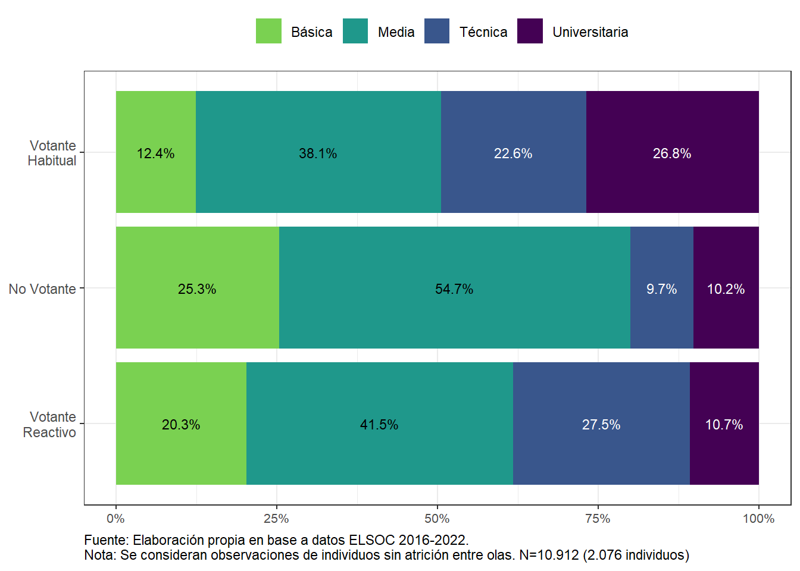Como se observa en el Gráfico 2.9, los tres tipos de votantes tienen una distribución de ingresos distinta. La proporción de personas con altos ingresos varía según el perfil de votante. Estos representan un 11,2% en el grupo de votantes habituales, un 7,3% en el grupo de votantes reactivos y un 5,1% en el grupo de no votantes respectivamente. Esta gradiente es menos clara para los otros grupos de ingreso. Las personas de ingreso medio tienen una presencia similar en el grupo de votante habitual y no votante (50,1% y 49,4%, respectivamente) mientras que su presencia disminuye para el grupo de votantes reactivos (45,3%). Para el caso de las personas de ingreso bajo, estas muestran una menor presencia en el grupo de votante habitual (38,8%). Mientras que en los otros grupos tienden a mostrar una mayor presencia, llegando a un 47,4% en el grupo de votantes habituales y un 45,5% en el grupo de no votantes (8,7% y 6,7% puntos de diferencia, respectivamente).
Por otro lado, se observa una gran diferencia al analizar la posición social subjetiva. Las personas que se perciben en la posición social alta aparecen solo en los grupos de votante habitual y votante reactivo, llegando a un 6,7% y 6,1%, respectivamente; mientras que prácticamente no se observan en el grupo de no votantes. En cuanto aquellos que se perciben en la posición social media llegan a representar el 40% en los votantes habituales y votantes reactivos, y sólo un 21,5% entre los no votantes. En contraste, aquellos que se perciben en la posición social baja representan alrededor del 50% entre los votantes habituales y votantes reactivos, y llegan a representar un 78,1% entre los no votantes.
Es importante mencionar que la definición de estratos de ingreso y de posición social subjetiva no son equivalentes, por lo tanto la comparación del comportamiento de estas variables con los grupos de votantes debe hacerse con precaución.
Figura 2.9: Clase social en 2022 según perfil de votante
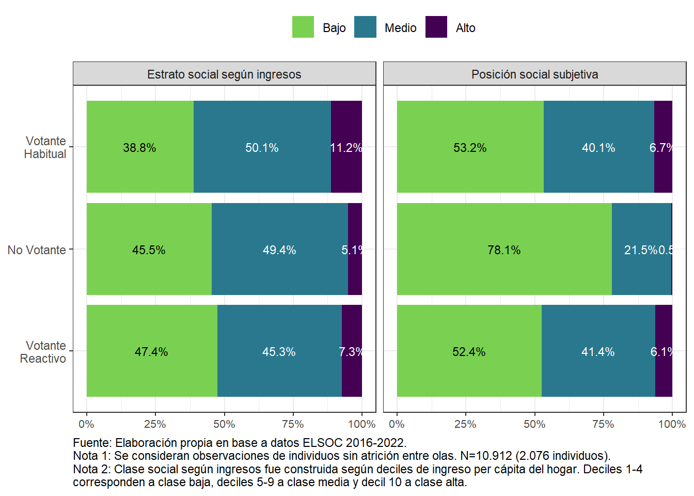2.3 Proceso constituyente
El plebiscito de salida para la propuesta de Constitución de 2022 ha sido uno de los eventos políticos más relevantes del último tiempo que ha vivido la sociedad chilena (Mascareño et al., 2023). ELSOC incluyó preguntas que permiten caracterizar este evento en términos de la disposición a cambiar la constitución, el comportamiento de voto de los participantes y la evolución de la confianza hacia la convención constitucional. Como se observa en el Gráfico 2.10 el apoyo al cambio constitucional presentó algunas variaciones entre 2016 y 2019. En general, se puede observar que el apoyo al cambio constitucional varió levemente entre 2016 y 2017, y disminuyó un poco más entre 2017 y 2018. Esta tendencia se revierte notoriamente el año 2018, llegando a un apoyo superior al 77%.
Considerando los tres tipos de votantes identificados, estos siguen la pauta general de apoyo al cambio constitucional, aunque con algunas diferencias importantes entre ellos. Los votantes habituales han sostenido un nivel de acuerdo con un cambio constitucional mayor a los otros grupos, alcanzando un máximo de 81,8% en 2019 y un mínimo de 58% en 2018. Los no votantes y votantes reactivos mantienen niveles similares, con un máximo de 77% en 2019 y un mínimo de 51,1% y 44,8%, respectivamente. Los tres grupos convergen en un porcentaje semejante en 2019, superior al 77%, lo que coincide con el Estallido Social y el inicio del proceso constituyente con la firma del “Acuerdo por la Paz Social y la Nueva Constitución”.
Figura 2.10: Nueva constitución según perfil de votante
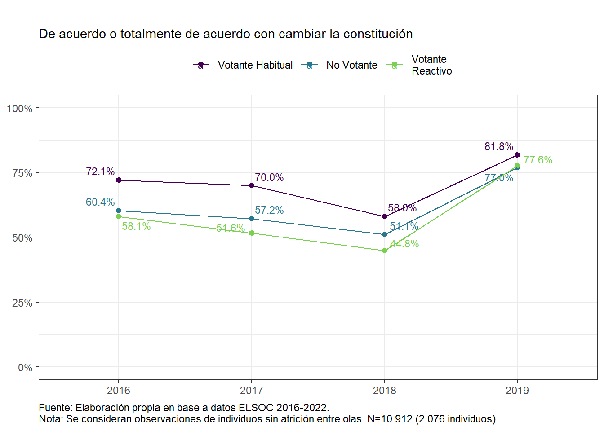Como se mencionó, ELSOC permite caracterizar el comportamiento electoral de los participantes durante el plebiscito2. Así, es posible describir la elección de voto apruebo o rechazo. Como muestra el Gráfico 2.11, se estima que un 41,1% de los participantes declaró votar rechazo y un 37,1% declaró votar apruebo. Si bien el resultado es consistente en términos de resultado electoral real, a favor del rechazo, la estimación se aleja de los resultados del plebiscito3. Llama la atención que un 21,8% de los individuos declaró no haber asistido a votar o no marcar preferencia. Esto implica que no es posible saber si asistieron a sufragar dada la obligatoriedad del voto y/o cuál fue su opción electoral una vez en la urna.
Figura 2.11: Plebiscito de Salida 2022

El resultado del plebiscito a favor de rechazar el texto constitucional ha sido un tema de amplio debate público. A partir de la ELSOC, es posible aportar algunos elementos a este tópico contrastando, por ejemplo, las preferencias entre el plebiscito de entrada y el plebiscito de salida. El Gráfico 2.12 detalla los cambios en las preferencias de los individuos entre ambos plebiscitos. Primero, se observa que casi la totalidad de quienes votaron apruebo en 2022 habían optado por la misma preferencia en 2020. Segundo, el rechazo en el plebiscito de salida se compone, por un lado, de un grupo importante de individuos que habían votado apruebo o que eran indecisos o no votaron en 2020; y por otro, de casi todos quienes habían rechazado en el plebiscito de entrada. Finalmente, el porcentaje de indecisos o no votantes se redujo en casi un 10% entre ambas elecciones, probablemente debido a la obligatoriedad del voto. Una parte de los individuos indecisos en 2020 se mantuvieron en esa categoría para el plebiscito de 2022, mientras que la mayoría de ellos se trasladó a la opción rechazo. Solo unos pocos se movieron a la opción apruebo.
Figura 2.12: Preferencias en plebiscito de entrada y salida

Al considerar los perfiles de votantes identificados y su comportamiento en el plebiscito se observan algunos patrones interesantes. Como se puede ver en el Gráfico 2.13, La opción apruebo tiene una mayor presencia entre los votantes habituales (41,6%), luego en el grupo de votantes reactivos (28,8%) y una menor presencia en el grupo de no votantes (25,6%). En contraste, la opción rechazo tiene mayor presencia en el grupo de votantes reactivos (48,8%), luego en el grupo de no votantes (42,3%) y un poco menos en el grupo de votantes habituales (40,5%). Este resultado es relevante para ayudar a comprender el triunfo del rechazo. Muestra que, entre los nuevos votantes, particularmente en los votantes reactivos, la opción rechazo fue mayoritaria.
Adicionalmente, aquellos que se declararon indecisos o no asistieron a votar muestran una distribución consistente según sus tipologías. Como es de esperar, los votantes habituales son el grupo con menor composición de indecisos o no votantes (17,9%), luego el grupo de votantes reactivos (22,5%) y finalmente el grupo de votantes habituales (17,9%). Así, la abstención declarada es más fuerte en aquellos que no han participado electoralmente a lo largo de las últimas seis elecciones.
Figura 2.13: Preferencias en plebiscito de salida según perfil de votante

El contraste de las preferencias entre el plebiscito de entrada y salida para los distintos tipos de votantes permite tener un panorama aún más detallado. Como muestra el Gráfico 2.14, del 72,6% de votantes habituales que optó por la opción apruebo en 2020, aproximadamente la mitad mantuvo su opción electoral en 2022, mientras que el resto migró a la opción rechazo y una pequeña proporción al grupo de indecisos. Asimismo, casi la totalidad de votantes habituales que optaron por la opción rechazo en 2020 también lo hicieron en 2022, al tiempo que los indecisos migraron al rechazo o se mantuvieron en su posición.
En el grupo de votantes reactivos, en el plebiscito de entrada el 56,2% declara que no votaron o eran indecisos en 2020, un 9,1% optó por rechazar y un 34,7% optó por aprobar. El resultado es muy diferente al plebiscito de salida. La mayoría de quienes se declararon indecisos o rechazaron en la entrada optaron por la opción rechazo en el plebiscito de salida. Asimismo, más de la mitad de quienes aprobaron en la entrada optaron por rechazar o se movieron a la indecisión en el plebiscito de salida. Adicionalmente, para el grupo de no votantes, en el plebiscito de entrada un 79% declara que no votaron o eran indecisos en 2020, un 20,7% optó por aprobar y prácticamente no hubo votos a por la opción del rechazo (0,3%). Al igual que con los votantes reactivos, el resultado es muy diferente al plebiscito de salida. La mayoría de quienes se declararon indecisos en la entrada optaron por la opción rechazo o mantuvieron su abstención en el plebiscito de salida. En menor medida, quienes se abstuvieron se movieron a la opción apruebo. En contraste, una porción pequeña de quienes aprobaron en la entrada optó mantener su voto, los demás de este grupo se movieron a la opción rechazo o hacia la abstención.
Los resultados muestran importantes diferencias entre votantes habituales, votantes reactivos y no votantes. Globalmente, se observa con mayor claridad que los votantes reactivos en el escenario de voto obligatorio optaron principalmente por la opción rechazo. Esto es muy claro entre quienes se abstuvieron de votar en el plebiscito de entrada. Asimismo, para los no votantes en el escenario de voto obligatorio, la preferencia principal fue rechazar. Esto es muy claro entre quienes se abstuvieron de votar en el plebiscito de entrada. Aunque son escasos los estudios sobre las diferencias en preferencias y comportamiento político y comportamiento entre votantes y no votantes, (Koch et al., 2021) muestran que las personas pueden diferir según su tipología de votante, en línea con lo observado en las tipologías identificadas en la ELSOC.
Figura 2.14: Preferencias de voto en plebiscito de entrada y salida, según perfil de votante

Un dato adicional que permite iluminar el periodo de la Convención Constitucional es el nivel de desconfianza en esta institución. La confianza-desconfianza en las instituciones políticas es considerada una base fundamental para el funcionamiento y legitimidad de la democracia (Uslaner, 2018a; Zmerli & Meer, 2017). Esta se entiende como la evaluación que los ciudadanos hacen del funcionamiento y actuación de estas instituciones (Hardin, 2001). Considerando que Chile se caracteriza por los bajos niveles de confianza institucional, surge la interrogante acerca de los niveles de confianza-desconfianza sobre una institución nueva, creada para un fin específico, proponer un nuevo texto constitucional.
Tomando como referencia los tipos de votantes identificados, el Gráfico 2.15 muestra un alto porcentaje de desconfianza en la Convención Constitucional en 2022. El grupo que menos desconfía es el de los votantes habituales, con un 64,4%, luego el grupo de votantes reactivos, con un 57,4%, y finalmente, el grupo de no votantes alcanzan el mayor nivel de desconfianza en la Convención con un 78,2%. Consistente con los niveles de acuerdo con el cambio constitucional discutidos previamente, el grupo de votantes habituales muestra la menor desconfianza y el mayor grado de acuerdo con el cambio constitucional.
Figura 2.15: Desconfianza en la Convención Constitucional en 2022, según perfil de votante

2.4 Actitudes hacia la democracia
Las diferencias en la conducta electoral se reflejan claramente en la legitimidad democrática. El Gráfico 2.16 muestra que los votantes habituales son estables en su preferencia por la democracia frente a otras formas de gobierno, con un apoyo de alrededor del 60%. Por el contrario, en 2022, los votantes reactivos legitiman la democracia en solo un 51,3%, mientras que la prefieren 37,2% de los no votantes. Así, es posible establecer que existe una correlación entre el comportamiento electoral y el sentido de resguardo a la democracia, en tanto una mayor participación en elecciones se asocia a una mayor preferencia por este régimen político. Es destacable que, tanto los votantes reactivos como los no votantes, alcanzan una marcada cúspide de preferencia por la democracia en 2019.
La Figura 2.17 muestra las tendencias de las otras dos categorías de esta dimensión medida en ELSOC. Se observa que la mayoría de los no votantes se concentran en la categoría “a la gente como uno le da lo mismo un régimen democrático que uno autoritario”, mientras que los votantes reactivos tienen una distribución más equitativa entre esta categoría y “en algunas ocasiones es preferible un gobierno autoritario”. Con todo, en 2022, tanto entre los votantes reactivos como entre los no votantes, ha habido una baja entre quienes declaran que “da lo mismo” el tipo de régimen, marcando un mayor porcentaje de preferencia por la democracia o por un gobierno autoritario.
Figura 2.16: Legitimidad democrática según perfil de votante

Figura 2.17: Preferencia por el autoritarismo según perfil de votante

Como muestra el Gráfico 2.18, pese a existir diferencias en el nivel de apoyo a la democracia entre los tipos de votantes, todos ellos muestran poca satisfacción con el funcionamiento de la democracia. Si bien los votantes habituales están levemente más satisfechos que los otros dos tipos de votantes, en ningún año su satisfacción supera el 15,7%, cifra muy baja. El fenómeno de una alta y sostenida preferencia por la democracia como régimen político, acompañada de una negativa evaluación del funcionamiento de la democracia en la práctica, es común en democracias modernas y ha sido denominado por la literatura política como ciudadanía crítica (Norris, 1999). Es claro que este tipo de ciudadano se consolida más fuertemente en los votantes habituales que en el resto de la muestra. Así, en términos de (Easton, 1975), es posible observar que los votantes coinciden en su “apoyo específico” al régimen, es decir, en su mala evaluación del desempeño institucional, pero difieren en la relevancia que le otorgan a los principios democráticos en tanto “apoyo difuso”. Esto podría indicar que la desafección política de los no votantes y votantes reactivos puede representar a individuos más abiertos a salidas autoritarias en contextos de crisis.
Figura 2.18: Satisfacción democrática, según perfil de votante
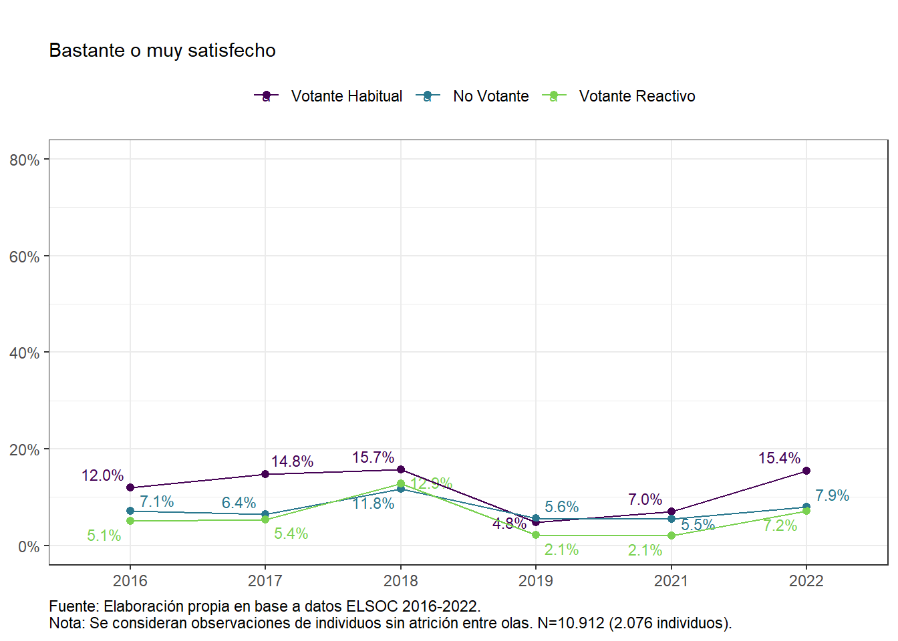El Gráfico 2.19 refuerza la interpretación anterior. Los votantes habituales muestran menos actitudes autoritarias que los no votantes y votantes reactivos, diferenciándose en más de un 10%, con excepción de 2017 (8,3%). Mientras los votantes habituales en 2021 mantienen actitudes autoritarias en un 56,9%, los votantes reactivos y no votantes tienen estas características en alrededor de un 72%. Cabe entonces preguntarse si son las actitudes autoritarias y baja adherencia a principios democráticos lo que lleva a los ciudadanos a la abstención electoral, o bien es la abstención reiterada la que induce preferencias autoritarias sobre los individuos. Es importante notar que, para los tres grupos de votantes, las actitudes autoritarias superan al 50% de sus integrantes en todos los años, con excepción de los votantes habituales en 2019, lo que indica una tendencia autoritaria generalizada en el país. No obstante, en 2019 los tres grupos redujeron visiblemente su autoritarismo, retornando a sus valores anteriores en 2021, lo que nuevamente pudo haber sido un efecto de las demandas participativas del Estallido Social.
Figura 2.19: Actitudes autoritarias según perfil de votante

2.5 Identidad e involucramiento político
El Gráfico 2.20 muestra la distribución de los tipos de votantes según su autoposicionamiento político en el continuo izquierda-derecha. Como es de esperar, los no votantes son quienes menos posicionamiento político declaran, con un 42,4% de personas sin identificación alguna. De entre quienes se identifican, la mayoría son de centro (35,8%), seguido por la derecha (11,8%). Los votantes reactivos también tienen un alto porcentaje de personas sin identificación política, un 30,3%. Al igual que para los no votantes, la mayoría de votantes reactivos se auto-posicionan de centro (37,7%), aunque también concentran la mayor proporción de individuos de derecha (23,5%), mientras que la izquierda alcanza su menor proporción (8,4%) en comparación al resto de los grupos. Los votantes habituales son quienes mayor identificación política tienen, un 76,5% se posiciona en algún sector del eje. Como en todos los grupos, la mayoría lo hace al centro del espectro político (30,4%), aunque al mismo tiempo concentran la mayor proporción de individuos de izquierda (26,9%). Los votantes habituales son el segundo grupo con mayor distribución a la derecha del continuo, un 19,2%. Así, mientras los no votantes son personas altamente no-identificadas políticamente, los votantes habituales se concentran en la centro-izquierda y los votantes reactivos se dividen mayoritariamente entre la ausencia de posición política y la centro-derecha.
Figura 2.20: Posición política en 2022 según perfil de votante

Si observamos la evolución de la ausencia de posición política en el Gráfico 2.21, vemos que los tres tipos de votantes alcanzan niveles marcadamente distintos. Los votantes habituales han alcanzado siempre mayores niveles de identificación, mientras que los no votantes son los individuos con menor grado de identificación política, seguidos de los votantes reactivos. No obstante, un análisis de los últimos años permite constatar una baja en la ausencia de autoidentificación política en 2021 para todos los grupos. Es posible que esto se asocie a la intensificación del nivel de politización de la discusión pública y mediática asociada al proceso constituyente. Asimismo, hacia 2022, se observa una regresión de la identificación, incluso en los grupos más politizados y participativos.
Figura 2.21: Ausencia de posición política según perfil de votante

La Figura 2.22 presenta la estabilidad y cambios en el posicionamiento político de los tres tipos de votantes entre 2019 y 2022. Los votantes habituales muestran la mayor estabilidad ideológica. Entre quienes se identifican de izquierda, centro o derecha, la mayoría tiende a mantener su posición política de 2019 a 2022 (61,9% los de izquierda, 53,7% los de centro y 64,3% los de derecha). Entre quienes no se identifican, un 47,9% se mantiene en esa posición. Los votantes reactivos, por su parte, alcanzan una alta estabilidad ideológica entre quienes se declaran de derecha, con un 74,6% de los individuos manteniéndose en esa posición entre los años analizados. No obstante, este tipo de votante muestra elevada volatilidad en la izquierda, solo un 23,9% mantiene su autoidentificación de izquierda. Por último, los no votantes son los individuos menos estables políticamente, aunque alcanzan cierto equilibrio en el centro y el apoliticismo, con un 52,9% y 56%, respectivamente. De esta forma, las posiciones ideológicas de nuestros encuestados, por un lado, no son estáticas en el tiempo, y varían en base a eventos políticos y sociales. Por otra parte, los niveles de variación son muy diferentes entre grupos, donde niveles crecientes de estabilidad temporal son marcadamente más altos entre las personas que participan más activamente en los eventos electorales.
Figura 2.22: Estabilidad y cambios en posición política entre 2019 y 2022, según perfil de votante

En materia de interés en la política, el Gráfico 2.23 revela que los votantes habituales son quienes más interesados se encuentran, con una máxima en 2019 del 27,2%, aunque esto ha disminuido hacia 2022 llegando al 19,2%, lo que es sensiblemente mayor al 13,5% de 2016. Los votantes reactivos alcanzaron niveles similares a los votantes habituales en interés en la política entre 2016 y 2017, aunque este disminuyó, llegando a una mínima de 2,9% en 2022. No obstante, al igual que su comportamiento electoral, esto indica que los votantes reactivos son volátiles y, por tanto, podrían volver a interesarse en el futuro, lo que podría incidir en su participación en los sufragios. Los no votantes, por su parte, han mantenido un constante bajo interés en la política, cuya máxima fue de 9,3% en 2019 y, en la actualidad, de solo un 3,6%. Así, en general, Chile presenta tendencias bajas de interés en la política, las que no superan el 30%.
Figura 2.23: Interés en la política según perfil de votante

El Gráfico 2.24 ilustra el porcentaje de individuos que no se identifica con ningún partido político. El grupo de no votantes y de votantes reactivos muestran la más baja identificación, especialmente a partir de 2018, con 6% y 4,9%, respectivamente, para alcanzar alrededor de 3% en 2022. Los votantes habituales muestran un nivel de identificación sensiblemente mayor que los otros dos grupos, aunque con variaciones a lo largo del tiempo; el nivel más alto de identificación lo alcanzan en 2019 (27,2%), pasando en 2022 a 19,2%.
Destacan los no votantes, cuyos miembros sostienen una desidentificación con los partidos superior al 74% todos los años, lo que ha subido en 2022 al 82,9%. Los votantes reactivos tienen alzas y bajas, aunque hacia el 2022 alcanzan un 71,5% de desidentificación, porcentaje muy elevado. Los votantes habituales, por su parte, son el grupo que más se identifica con partidos políticos. Su desidentificación incluso se redujo en 2022, alcanzando un mínimo del 54,7%.
Figura 2.24: Partidismo según perfil de votante
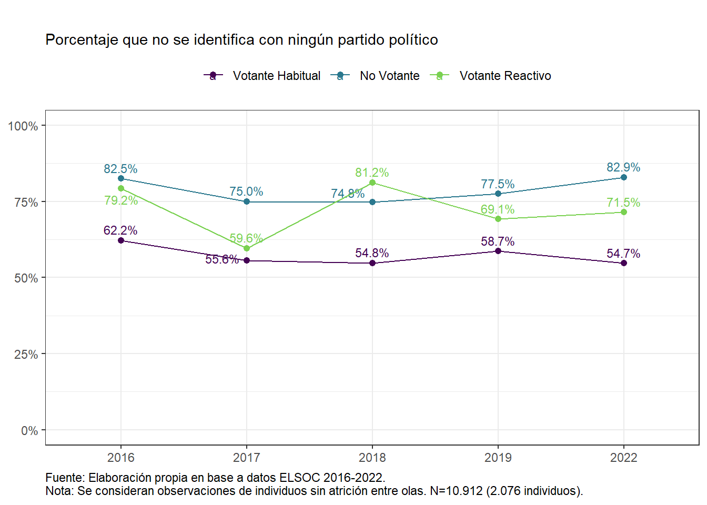El Gráfico 2.25 muestra el involucramiento político de los tipos de votantes en tres dimensiones: el hablar de política con amigos y familiares, el consumo de información política y el empleo de redes para discutir temas públicos. La conversación sobre política mantiene un nivel relativamente estable, salvo un incremento marcado en 2019 para los votantes habituales. La búsqueda de información política siempre es más alta entre los votantes habituales (entre 46% y 55%), aunque se aprecia una baja en 2022. Los votantes reactivos incrementan la búsqueda de información política desde 31% en 2017 a 36,6% en 2022. Los no votantes incrementaron la búsqueda de información política desde 24% en 2017 a 34,5% en 2021, disminuyendo drásticamente en 2022 (18,7%). Finalmente, la expresión pública de opiniones muestra un incremento entre 2018 y 2019, especialmente entre votantes habituales, para disminuir posteriormente, alcanzando en 2022 niveles incluso más bajos que los declarados en 2016.
En suma, si bien el debate público muestra un relativo retraimiento, las entrevistadas y los entrevistados buscan información y conversan de política en círculos sociales cercanos. Si bien todos los grupos tienden a informarse más de política en los medios que a hablar de política o expresar sus ideas en redes, hay una clara tendencia de los votantes habituales a estar más involucrados políticamente, lo que coincide con su participación electoral. Los votantes reactivos y no votantes tienden a involucrarse en más de un 10% menos que los votantes habituales en la actualidad. Es importante notar también que, para todos los tipos de votantes, el involucramiento político disminuyó en 2022, con excepción de los votantes reactivos que mantuvieron cierta estabilidad en conversar e informarse sobre política con relación al año anterior.
Figura 2.25: Involucramiento político según perfil de votante

2.6 Confianza institucional
La confianza en las instituciones constituye uno de los indicadores centrales de la cohesión social, que se vincula al sentido de pertenencia. Una sociedad exhibe alta cohesión si se constata una alta confianza institucional (Bertelsmann Stiftung, 2013). La confianza en las instituciones es, entonces, esencial para entender la cohesión en sociedades democráticas. La relación que se establece entre los ciudadanos y sus instituciones condicionan la legitimidad y estabilidad de los gobiernos democráticos (Citrin & Muste, 1999; Levi & Stoker, 2000; Zmerli & Meer, 2017).
La confianza hacia las instituciones se asocia con la evaluación que los ciudadanos hacen de la manera como ellas se desempeñan (Morales Quiroga, 2008). De esta forma, cuando la ciudadanía percibe que ellas no cumplen sus funciones claves o perciben niveles importantes de corrupción en ellas, se exhiben altos niveles de desconfianza (PNUD, 2019). Segovia (2015), a su vez, indica que la confianza se relaciona con lo que la ciudadanía espera de las instituciones y la orientación al bien común que se les atribuye. Así, cuando las instituciones esenciales de la democracia no funcionan bien y se deslegitiman, se daña el sentido de pertenencia e incrementa la desafección política, afectando críticamente la cohesión social (Sojo, 2017). Adicionalmente, la falta de confianza institucional, especialmente en las instituciones de orden y seguridad, puede incidir en una mayor disposición de las personas a no cumplir la ley y favorecer la normalización de la corrupción (Jones, 2015; Morris & Klesner, 2010; Uslaner, 2018b)
ELSOC analizó los niveles de confianza que exhiben chilenos y chilenas hacia instituciones centrales, tales como el Gobierno, la figura del Presidente de la República, los partidos políticos, el congreso y carabineros de Chile.
En el Gráfico 2.26 podemos observar el porcentaje de personas que respondió tener poca o ninguna confianza en el gobierno y en la figura del Presidente de la República a lo largo de las distintas olas de ELSOC. Por un lado, los resultados, para confianza en el gobierno y en el Presidente, muestran importantes variaciones a lo largo del tiempo: la desconfianza en el gobierno y Presidente tiende a disminuir hasta 2018 (en torno a un 52 %) sin constatarse una mayor diferenciación según tipo de votantes. Este efecto se revierte e incrementa muy sustancialmente hasta llegar a un 85% y 87% de niveles de desconfianza tanto en el gobierno como en la figura del Presidente en el 2019, período en que ocurre el Estallido Social. A partir de ese año, caen los niveles de desconfianza de manera diferencial según tipo de votante, llegando a niveles similares a los observados pre-estallido social, pero principalmente en los votantes habituales y reactivos; en el caso de los no votantes, ellos mantienen altos niveles de desconfianza el 2022, en torno al 74 y 76% respectivamente.
Figura 2.26: Desonfianza en el gobierno y el presidente, según perfil de votante
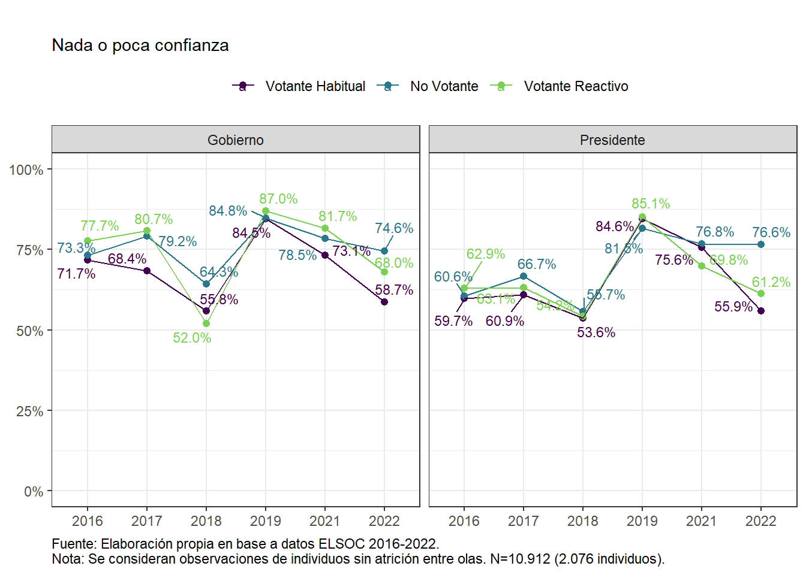En el Gáfico 2.27, podemos observar el porcentaje de personas que respondió tener poca o ninguna confianza en los partidos políticos y congreso a lo largo de las distintas olas del estudio. Por un lado, es relevante resaltar que los resultados, tanto para la desconfianza en los partidos políticos como en el congreso, son extremadamente altos y relativamente estables a lo largo del tiempo para todos los perfiles de votante, revelando la existencia de un consenso de desconfianza de la ciudadanía respecto de estas instituciones. Pese a lo anterior, se puede observar que se exhiben mayores niveles de desconfianza hacia los partidos políticos que hacia el congreso en la mayoría de los escenarios, exceptuando el 2019, año en que se constató una alta desconfianza hacia ambas instituciones (superando el 90% de desconfianza en todos los grupos).
La desconfianza hacia el congreso aumenta de manera sustancial en todos los perfiles de votantes el 2019 cuando ocurre el estallido social. Luego vuelve a caer y a estabilizarse a los niveles pre-crisis social para todos los perfiles de votantes. En general, se observa que el grupo reactivo presenta más desconfianza que el no votante, y este presenta más desconfianza que los votantes habituales. Adicionalmente, se observa que los votantes habituales venían exhibiendo una tendencia a la disminución de la desconfianza hacia los partidos políticos hasta el año 2018. Sin embargo, esta tendencia se revierte el 2019 y aumenta en casi 10 puntos porcentuales, para luego volver a estabilizarse en torno al 85% de desconfianza.
Figura 2.27: Desconfianza en partidos políticos y congreso, según perfil de votante

En el Gráfico 2.28, podemos observar el porcentaje de personas que respondió tener poca o ninguna confianza en Carabineros a lo largo de las distintas olas de ELSOC. Los resultados son similares a lo largo del tiempo para todos los perfiles de votantes, dando cuenta que la participación electoral no se relaciona de forma alguna con la confianza en Carabineros. En general, se puede constatar que existe niveles sustancialmente más bajos de desconfianza hacia Carabineros en comparación con los partidos políticos y el congreso. Entre el 2016 y 2018 los niveles de desconfianza fluctuaron en torno al 30-35%, observándose, un incremento sustantivo de desconfianza hacia carabineros durante el 2019 y 2020 cuando ocurre el estallido social. Luego, los niveles de desconfianza vuelven a los exhibidos pre-estallido, fluctuando entre un 28% y 34% según tipo de votantes.
Figura 2.28: Desonfianza en Carabineros según perfil de votante
2.7 Opinión pública y orientaciones socio-políticas
A lo largo de los años, ELSOC ha buscado analizar distintos ámbitos de la opinión pública, tales como las orientaciones valóricas, socioeconómicas y socioculturales de la población chilena.
Primero, como afirman Barrientos & Bahamondes (2022), la aceptación de los derechos de las personas LGBTQ+ ha mejorado a lo largo del tiempo en América Latina y en Chile, un patrón también evidenciado por la encuesta Plaza Pública (CADEM) de octubre de 2022. Por otro lado, según la misma encuesta (CADEM, 2022), solo un 32% de personas en Chile cree que el aborto debe ser legal en cualquier circunstancia, aunque hay diferencias de opinión entre personas con diferentes orientaciones políticas. Así, para este informe, se reportan las percepciones de nuestra muestra respecto a los derechos de las parejas homosexuales a poder adoptar hijos, así como el apoyo al aborto legal bajo cualquier circunstancia, según cada perfil de votante analizado.
Segundo, en lo que dice respeto a las orientaciones socioeconómicas de la población chilena, los datos de la encuesta PNUD-DES (PNUD, 2018), muestran que el 67% de la población chilena reporta mucha molestia por la desigualdad en educación en Chile, a la vez que la encuesta CEP (2023) muestra que el 31% de la población chilena cree que el gobierno actual debe tener como una de sus principales prioridades resolver el problema de las pensiones en Chile. En un país marcado por altos niveles de desigualdad social como Chile, es relevante entender la opinión de los distintos perfiles de votantes sobre las pensiones y la educación en Chile. Por eso, en este informe analizamos el porcentaje de personas, por cada perfil de votante, que cree que las pensiones deben ser aseguradas por cada persona y también la creencia de que el Estado chileno debe ser el principal proveedor de la educación en Chile.
Tercero, dentro de las orientaciones socioculturales, reportamos, según perfil de votante y a lo largo del tiempo, distintos indicadores sobre la percepción hacia el pueblo Mapuche y la relación del Estado con los pueblos indígenas de Chile, así como también, indicadores sobre la percepción de la población inmigrante en Chile.
Actualmente, el pueblo Mapuche es el pueblo originario más grande de Chile, y de acuerdo al último Censo (2018), representa el 12,8% de la población total del país. Durante el debate constitucional en Chile y la propuesta de la inclusión del reconocimiento de Chile como un país plurinacional con reconocimiento de sus distintos pueblos originarios, trajo al centro del debate público la relación histórica y actual del Estado chileno con los pueblos originarios y, en particular, con el pueblo Mapuche. Por ejemplo, un estudio de (M. Bargsted & González, 2022) muestra que la plurinacionalidad fue el factor más crítico en la definición de las preferencias electorales en el plebiscito. En este contexto, presentamos datos sobre los cambios en los niveles de desconfianza de la población chilena hacia el pueblo Mapuche a lo largo del tiempo para los distintos grupos de votantes. Además, reportamos indicadores sobre la percepción de las relaciones entre el Estado chileno y los pueblos indígenas en el contexto del proyecto constitucional desarrollado el año pasado.
Por último, analizamos también, para cada perfil de votante y a lo largo del tiempo, los niveles de desconfianza que la muestra tiene sobre distintos grupos migrantes en Chile, bien como la percepción de amenaza realista (i.e. en términos la creencia de que el aumento de la migración aumenta el desempleo en Chile) y simbólica (i.e. de que Chile pierde su identidad nacional con la presencia de inmigrantes en el país) que la migración puede elicitar, y también la percepción de que Chile debería tomar medidas más drásticas para controlar la migración. Este tema es de alta relevancia social, ya que la población migrante residente en Chile ha crecido un 14,1% en comparación con 2018 (Instituto Nacional de Estadísticas, 2022) y también porque existe un amplio cuerpo de literatura documentando que la exposición a flujos masivos de inmigrantes tiende a desencadenar sentimientos de hostilidad y reacciones negativas por parte de las poblaciones nativas y los medios de comunicación (Ajzenman et al., 2022; Stefoni & Brito, 2019), lo que en algunos casos afecta las preferencias políticas y, a su vez, los resultados electorales (Ajzenman et al., 2020; Mayda et al., 2016; Steinmayr, 2021).
2.7.1 Orientaciones valóricas
El Gráfico 2.29 presenta la trayectoria de las creencias valóricas de los individuos entre el 2018 y el 2022 sobre la adopción homoparental y el aborto legal sin causales. Para el caso de los no votantes, el acuerdo con la adopción homoparental presenta un alza el año 2019 y luego una caída en 2022, mientras el grado de acuerdo con el aborto libre presenta una caída y luego un alza para los mismos años. Opuestamente, para el grupo de votantes reactivos, el acuerdo con la adopción homoparental baja para el 2019 y luego sube en el 2022, mientras existe un alza y luego una caída en el acuerdo con el aborto libre en los mismos años. Por último, los votantes habituales siempre presentan un mayor grado de acuerdo con estas orientaciones valóricas más “progresistas” que el resto de votantes. Para este grupo se observa un alza sostenido en el apoyo al matrimonio homoparental para todas las olas, mientras que presentan un alza y luego una caída en su acuerdo con el aborto legal bajo cualquier circunstancia entre los años 2018 y 2022, tendencia que es paralela al grupo de votantes reactivos. Aunque la literatura, ha apuntado a que las personas que suelen apoyar los derechos de personas homosexuales también suelen apoyar el derecho al aborto legal (e.g. Hicks & Lee, 2006), este no es el caso en nuestra muestra, ya que para los grupos de votante habitual y votante reactivo, mientras se observa un alza en el apoyo a la adopción homoparental, también se registra una disminución en el apoyo al aborto legal sin causales.
Figura 2.29: Actitudes valóricas según perfil de votante

2.7.2 Orientaciones socio-económicas
El Gráfico 2.30 detalla la trayectoria de las creencias de los individuos entre el 2018 y el 2022 sobre la creencia que cada persona debería asegurarse por sí misma su futura pensión para la tercera edad. De la afirmación pueden desprenderse varias orientaciones detrás, por ejemplo, que una persona está de acuerdo porque cree que las pensiones deberían ser garantizadas principalmente por las personas individuales y no por el Estado, como una opinión a favor del sistema de capitalización o ahorro individual. En el caso de votantes habituales, el porcentaje de personas que creía esto se mantuvo, en general, constante en el tiempo, sin muchas variaciones. Para los votantes reactivos hubo, en general, una tendencia creciente a estar de acuerdo con esta afirmación, particularmente el 2021 post los primeros retiros de pensiones; y los no votantes presentaron una caída para el año 2019 con la afirmación para luego empezar a creer en esto cada vez más. Esto puede deberse a la discusión sobre retiros de pensiones, la que enfatizó en la opinión pública la idea de propiedad individual de los fondos.
Es importante destacar que, en promedio, los votantes habituales han presentado un menor grado de desacuerdo con esta afirmación, presentando una tendencia paralela con el grupo de votantes reactivos. Sin embargo, los no votantes han mostrado un mayor grado de volatilidad respecto al acuerdo con esta afirmación.
Figura 2.30: “Cada persona debiera asegurarse por si mismo su futura pensión para la tercera edad”, según perfil de votante
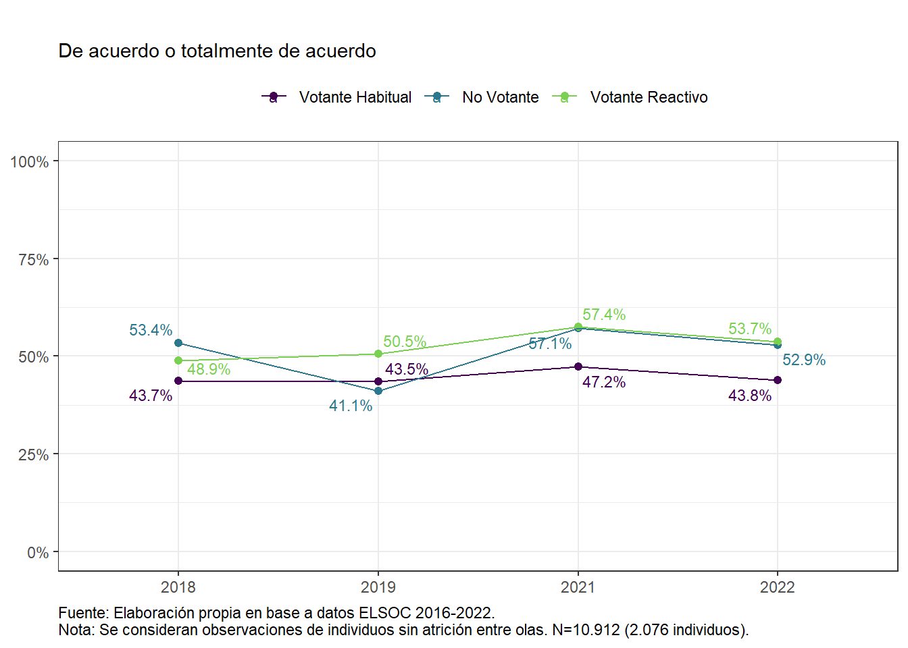El Gráfico 2.31 indica la trayectoria de las creencias de los individuos entre los años 2018 y 2022 sobre el grado de acuerdo con que el Estado de Chile sea el principal proveedor de educación. Para todos los grupos, se observa un grado muy alto de consenso con dicha afirmación, superando el 85% de acuerdo para todos los perfiles de votantes a lo largo de los años.
Los tres perfiles de votantes muestran además grados de acuerdo similar en los años 2018 y 2019. Además, los tres perfiles de votantes muestran un leve aumento en el grado de acuerdo entre los dos años. Las diferencias entre los tres grupos de votantes aparecen recién en el año 2022, donde el porcentaje de no votantes que están de acuerdo con la afirmación sube hasta casi alcanzar el 100%, mientras que en el caso de los votantes habituales y reactivos baja hasta el 86 y 90% respectivamente. El aumento en el grupo de acuerdo con la afirmación para los tres tipos de votantes puede relacionarse con el estallido social y las movilizaciones por derechos sociales del año 2019 ; mientras que la disminución posterior para los votantes habituales y reactivos puede tener relación con que este efecto no perduró en el tiempo para estos grupos. Los no votantes fueron el único perfil que presentó un alza en el grado de acuerdo durante todos los años, creciendo casi 10 puntos porcentuales a lo largo de los años y llegando a un grado de acuerdo de 97% (casi unánime entre los no votantes).
Figura 2.31: “El Estado de Chile, más que los privados, debería ser el principal proveedor de educación”, según perfil de votante
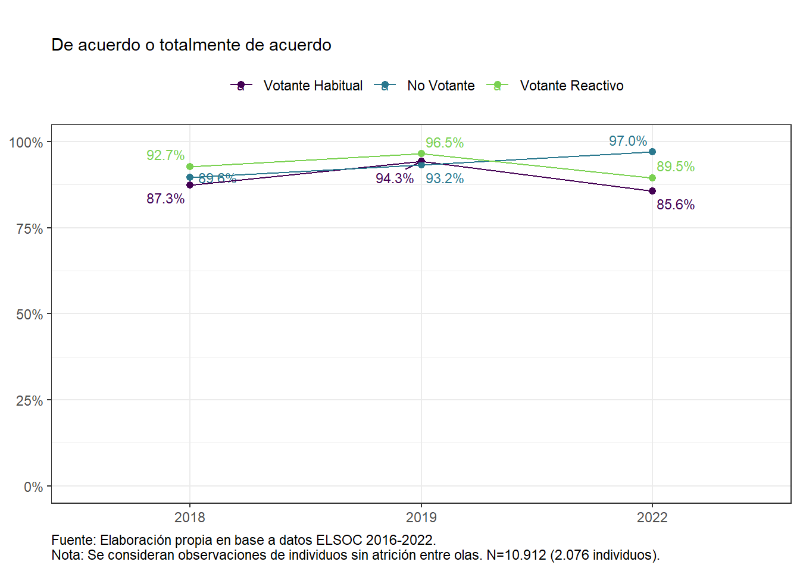2.7.3 Orientaciones socio-culturales
Este submódulo analiza principalmente opiniones, desconfianza y medidas que creen que deberían tomarse respecto al pueblo Mapuche y la población migrante en Chile.
El Gráfico 2.32 detalla la trayectoria de las creencias de los individuos entre los años 2016, 2018 y 2022 sobre la desconfianza declarada hacia los Mapuche según el tipo de votante. Para todos los grupos se observa, en promedio, un alza en el grado de desconfianza que se acentúa para el año 2022. Adicionalmente, se observa que para todos los años el grupo no votante presenta una mayor desconfianza que los grupos votante reactivo y votante habitual, alcanzando el 50.7% de todo el grupo no votante para el año 2022. Por otro lado, el grupo votante habitual es el que tiene menores niveles de desconfianza en las olas analizadas, aunque también se registra un aumento de la desconfianza hacia personas Mapuche para el año 2022 en los otros grupos de votantes.
Figura 2.32: Desconfianza hacia los Mapuche según perfil de votante
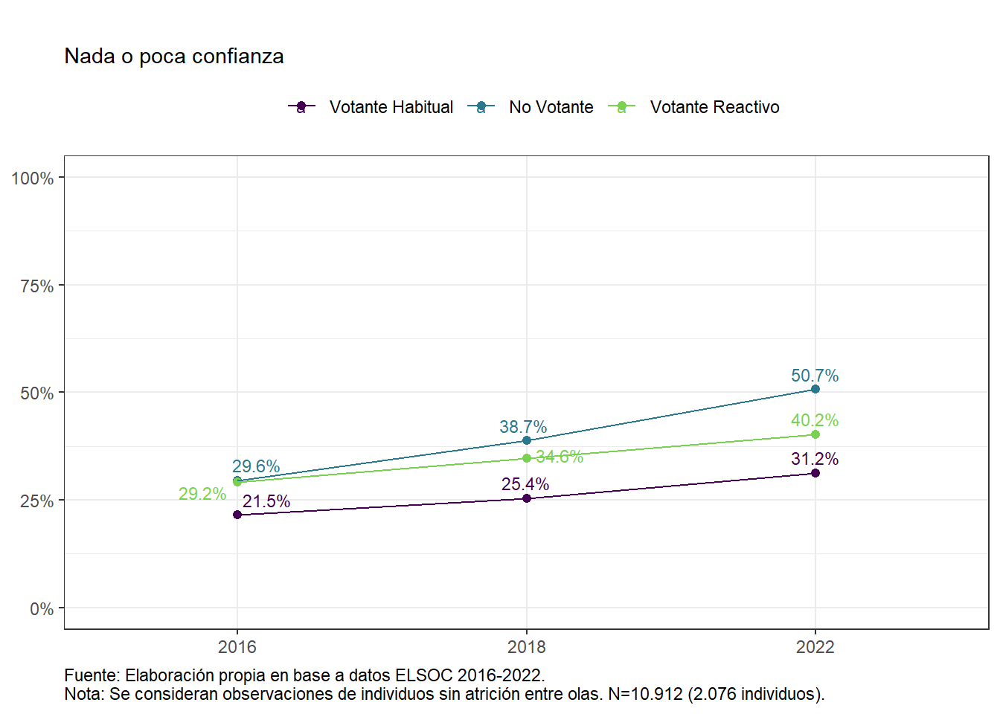El Gráfico 2.33 nos muestra que, en promedio, ningún perfil de votante está mayormente de acuerdo o muy de acuerdo con que la nueva constitución permitiría una mejor relación entre el Estado y los pueblos indígenas de Chile. Adicionalmente, los votantes reactivos y los no votantes son aquellos que presentan un menor grado de acuerdo.
Si, por un lado, desde el Gráfico 2.33 se evidencia que, para el año 2022, cerca de mitad del grupo no votante, presenta valores elevados de desconfianza hacia personas Mapuche, por otro lado, en el Gráfico 2.34, observamos que también son uno de los grupos que presenta un bajo grado de acuerdo con una mejor relación entre el Estado y pueblos indígenas, a la par con el votante reactivo.
Figura 2.33: “La nueva constitución permitirá una mejor relación entre el Estado y los pueblos indígenas en Chile” (2022), según perfil de votante

El Gráfico 2.34 detalla la trayectoria de la desconfianza hacia inmigrantes entre los años 2019, 2021 y 2022. No existe una tendencia equivalente para la desconfianza hacia las distintas nacionalidades de inmigrantes, pero para todos los perfiles de votantes se observa, en promedio, un alza en el grado de desconfianza hacia inmigrantes venezolanos que se acentúa durante el año 2021 en el caso de votantes reactivos y durante el año 2022 para votantes habituales. Considerando que los distintos grupos migrantes analizados han tenido trayectorias de migración en distintos momentos históricos, es posible que las diferencias de percepciones se deban a esto, bien como a las características socioeconómicas de cada grupo migrante. Adicionalmente, se observa que para todos los perfiles hubo una caída en la desconfianza hacia inmigrantes haitianos durante el año 2022, caída que fue más baja para los no votantes. También se muestra que hubo una caída en la desconfianza hacia peruanos el año 2022 para los perfiles de votantes habituales y no votantes, donde sólo los votantes reactivos aumentaron la desconfianza en los últimos dos años.
Figura 2.34: Desconfianza hacia inmigrantes, según nacionalidad de migrantes y perfil de votante

El Gráfico 2.35 muestra la trayectoria en el grado de acuerdo de que con la llegada de inmigrantes aumenta el desempleo según la nacionalidad del inmigrante y perfil de votante. Como se puede observar, para el 2022, el grupo de migrantes venezolanos es el que la muestra percibe como aumentando más el desempleo, en comparación con la migración peruana y haitiana. Por otro lado, la migración peruana fue percibida como aumentando más el desempleo en Chile durante el año 2021, dicha percepción disminuye el año 2022. Finalmente, si comparamos los grupos de votantes, para cada grupo de migrantes, podemos ver que existen tendencias relativamente similares entre ellos. La pregunta es relevante, porque según la encuesta representativa de Espacio Público Ipsos (2018), el empleo ocupó el segundo lugar entre las principales preocupaciones de los chilenos debido a la presencia de inmigrantes, precedido solo por el crimen (28% y 37% respectivamente). Además, Ajzenman et al. (2022) documentan para Chile entre 2010 y 2017 que, si bien la inmigración no tuvo un impacto sistemático en los niveles de empleo o desempleo, causó un aumento en las preocupaciones relacionadas con el desempleo, lo que revela una percepción (errónea) del verdadero efecto de la inmigración en los resultados laborales.
Figura 2.35: Inmigración y amenaza hacia el desempleo, según nacionalidad de migrantes y perfil de votante

La Figura 2.36 detalla la trayectoria del acuerdo con que la inmigración lleva a la pérdida de identidad nacional. En general, los no votantes y votantes habituales muestran tendencias similares, mientras que los votantes reactivos tienden a mantener estable su opinión, excepto con los venezolanos. Para votantes habituales y no votantes, durante el 2021 se observa una tendencia creciente en percibir una amenaza para la identidad nacional debido a la inmigración peruana y haitiana, pero esta tendencia disminuye el año 2022. Sin embargo, para votantes habituales y no votantes en el año 2021, se aprecia una baja en la amenaza asociada con la inmigración venezolana para la identidad nacional percibida, aunque se incrementa notoriamente el año 2022, superando la desconfianza inicial que había para el año 2019. Esta tendencia a percibir una amenaza a la identidad debido a la inmigración venezolana es aún más alta para los votantes reactivos, quienes muestran una tendencia creciente en todos los períodos.
Sumado a lo anterior, se evidencia que en general los votantes habituales perciben una menor amenaza a la identidad nacional por la inmigración que el resto de votantes y, en la mayoría de los casos, los no votantes se muestran como el grupo que percibe una mayor amenaza a la identidad nacional por parte de la inmigración, siendo superado marginalmente en menos de dos ocasiones por los votantes reactivos.
En este sentido, podemos afirmar que la amenaza percibida asociada a la llegada de migrantes podría tomar dos formas (Stephan & Stephan, 2000). Por un lado, la amenaza realista, la cual alude a la percepción de que la migración podría competir por los recursos del país y aumentar, por ejemplo, el desempleo en la población (Gráfico 2.35). Por otro lado, la amenaza simbólica alude a la percepción de que la llegada de la migración cambiaría la identidad nacional (Gráfico 2.36), afectando los modos de vida y de ser en Chile. Tomando en conjunto la figura 2.35 y el gráfico 2.36, podemos concluir, por lo general, que la población chilena percibe mayores niveles de amenaza realista, que de amenaza simbólica en relación a todos los grupos migrantes. No obstante, resalta que, para todos los grupos de votantes, en el año 2022, los niveles de amenaza realista y simbólica van al alza en relación al grupo de migrantes venezolanos.
Figura 2.36: Inmigración y amenaza hacia la identidad chilena, según nacionalidad de migrantes y perfil de votante
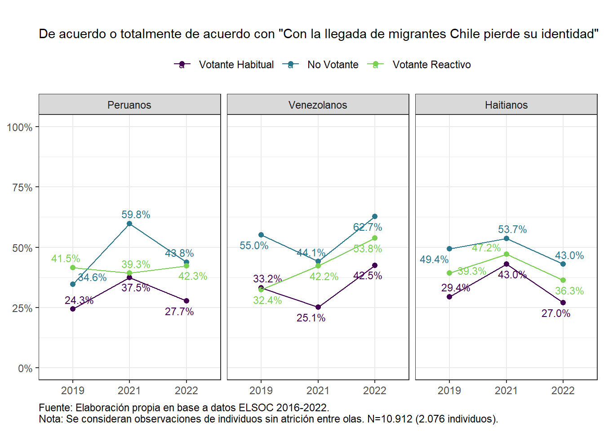En el Gráfico 2.37, podemos observar el porcentaje de personas en la muestra que están de acuerdo o totalmente de acuerdo con la afirmación de que “Chile debería tomar medidas más drásticas para impedir el ingreso de inmigrantes al país”. Por un lado, la percepción de la necesidad de estas medidas, es bastante elevada en la muestra, alcanzando siempre valores superiores al 50% de la población. Por otro lado, las tendencias a lo largo de los años, son más o menos similares entre los tres grupos de votantes, siendo que el único que disminuye esta percepción es el grupo de votantes habituales durante el año 2019, aunque esta percepción sube de manera sustantiva en los años siguientes también para el grupo de votantes habituales. El año 2022 es, además, el año en que esta percepción alcanza valores más elevados, donde la gran mayoría de participantes en todos los grupos de votantes está en acuerdo con medidas más restrictivas para controlar la migración en Chile. Estos datos son consistentes con los resultados de la Encuesta Bicentenario (2021), donde se ha registrado un aumento de la percepción del conflicto entre personas chilenas y migrantes entre el año 2017 y 2021, de un 38% a 64%, desde la perspectiva de la población local.
Figura 2.37: “Chile debería tomar medidas más drásticas para impedir el ingreso de inmigrantes al país”, según perfil de votante

Las elecciones en cuestión son: la elección presidencial del 2017, el plebiscito de entrada del 2020, las elecciones de alcaldes, gobernadores regionales y de convencionales del 2021 y la elección presidencial del 2021.↩︎
Considerando el periodo de levantamiento de datos, una parte de la recolección de datos se realizó antes del plebiscito (un 46,67% de la muestra) y otra parte post-plebiscito (53,33%).↩︎
ELSOC no es una encuesta cuya finalidad es predecir resultados electorales. Su naturaleza longitudinal la aleja de objetivos de este tipo. Sin embargo, permite caracterizar procesos a lo largo del tiempo.↩︎